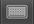
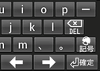

[環境設定]画面
Androidの環境設定メニューから[言語とキーボード]-[nicoWnnGの設定]を選ぶと、nicoWnnG IMEの環境設定を行うことができます。
nicoWnnGキーボードの[文字種]キーを長押しして、文字種ダイアログから[設定]ボタンを押しても、同様に環境設定を行うことができます。
詳細な
キーボード
設定 |
- 詳細なキーボード設定
-
縦画面／横画面で個別に設定することができる環境設定へ移行します。
- 縦/横画面で個別の詳細設定を行う
-
チェックをONにすると、[詳細なキーボード設定]の設定内容を縦画面と横画面で個別に保存します。縦画面で環境設定画面を呼び出したときは縦画面用、横画面で呼び出したときは横画面用の環境設定を行います。
チェックをOFFにすると、[詳細なキーボード設定]の設定内容を縦横両方画面で共有します。
|
キーボード
設定 |
- キー操作音
-
キーを押したときに音を鳴らします。
- キー操作音量
-
キー操作音の大きさを選びます。
- キー操作バイブ
-
キーを押したときに振動で知らせます。
-
入力時に選択したキーを拡大表示します。
フリック入力を行っているときは、フリックした方向と、その方向で入力される文字が表示されます。
- キーボードのデザイン
-
キーボードの見た目を選択します。
- フルスクリーンモード
-
チェックをONにすると、横画面モードでキーボードを表示するとき、全画面を占有します。
フルスクリーンモード
- キーコードテスト
-
ハードキーの入力テストを行うためのモードです。文字入力に使用することはありません。
キーコードテスト画面
|
| 変換設定 |
- 候補学習
-
チェックをONにすると、変換結果で確定した語句を学習し、次回の変換で優先して表示します。
- 予測変換
-
予測変換の表示方法を選びます。
| 常に表示 |
予測変換を行います。 |
| 非表示 |
予測変換を行いません。 |
| 変換キーで文節変換と交互表示 |
入力中の予測変換は行いませんが、[変換]キーを押して変換を開始すると予測変換を行います。その後、[変換]キーを押すごとに、予測変換と文節変換が切り替わります。 |
- 確定後予測変換
-
日本語の変換が確定したあと、その確定した単語を元に次の予測変換候補を表示します。
- 入力ミス補正
-
チェックをONにすると、英単語入力時にミス修正候補を表示します。予測変換を行うときのみ有効です。
|
| 辞書 |
- 日本語ユーザー辞書
-
日本語ユーザー辞書の単語を編集します。
- 英語ユーザー辞書
-
英語ユーザー辞書の単語を編集します。
- 学習辞書リセット
-
学習辞書の内容をすべて消去します。
|
設定の
保存と復元 |
- 設定の書き出し
-
nicoWnnGの各種設定を外部ファイル「/mnt/sdcard/nicoWnnG/system.setting」へ書き出します。
- 設定の読み込み
-
nicoWnnGの各種設定を外部ファイル「/mnt/sdcard/nicoWnnG/system.setting」から読み込みます。
- [@!?]キー登録再読み込み
-
[@!?]キーで入力できるユーザーシンボルの登録内容を再読み込みします。
- [@!?]キー登録内容初期化
-
[@!?]キーの登録内容となるユーザーシンボルファイルを初期化します。
|
詳細なキーボード設定
[詳細なキーボード設定]画面
環境設定画面で[詳細なキーボード設定]を選ぶと、「詳細なキーボード設定」画面が表示されます。
この設定は、縦画面と横画面で個別に設定を保存することができます。
| キーボード |
- QWERTY配列の設定
-
QWERTY配列の設定を行います。
- 12キー配列の設定
-
12キー配列の設定を行います。
- ハードキー接続時のみの設定
-
ハードキー接続時のみ有効になる設定を行います。
- かな文字を12キーで入力する
-
チェックをONにすると、かな文字を入力するときの初期配列を12キーにします。
チェックをOFFにすると、QWERTYキーにします。
一時的に12キー/QWERTYキーを切り替えたいときは、 [文字種]キーを長押しし、ダイアログで   ボタンを押します。
- 英字モードを使用しない
-
チェックをONにすると、[文字種]キーによる文字種切り替え（あＡ１）のうち、“Ａ”（英字モード）を使用しません。
チェックをOFFにすると、“Ａ”（英字モード）を使用します。
URL・メールアドレス・パスワードなどの「英数字入力が推奨される項目」では、かなモードでの入力が行えなくなりますが、[英字モードを使用しない]がONのとき、さらに英字モードでの入力ができなくなります。
[URL・パスワードなどでかな入力を許可する]をONにすると、これらの入力項目でもかなモードでの入力を行うことができます。２タッチ系のキーボードでパスワードを入力したいときに使用します。
- 英字モードで12キーで入力する
-
チェックをONにすると、英字モードで入力するときの初期配列を12キーにします。
チェックをOFFにすると、初期配列をQWERTYキーにします。
一時的に12キー/QWERTYキーを切り替えたいときは、 [文字種]キーを長押しし、ダイアログで ボタンを押します。
- 数字モードを使用しない
-
チェックをONにすると、[文字種]キーによる文字種切り替え（あＡ１）のうち、“１”（英字モード）を使用しません。
チェックをOFFにすると、“１”（英字モード）を使用します。
URL・メールアドレス・パスワードなどの「英数字入力が推奨される項目」では、かなモードでの入力が行えなくなりますが、[数字モードを使用しない]がONのとき、さらに数字モードでの入力ができなくなります。
[URL・パスワードなどでかな入力を許可する]をONにすると、これらの入力項目でもかなモードでの入力を行うことができます。２タッチ系のキーボードでパスワードを入力したいときに使用します。
- 数字モードで12キーで入力する
-
チェックをONにすると、数字モードで入力するときの初期配列を12キーにします。
チェックをOFFにすると、初期配列をQWERTYキーにします。
一時的に12キー/QWERTYキーを切り替えたいときは、 [文字種]キーを長押しし、ダイアログで ボタンを押します。
- 入力開始時の入力モード
-
キーボードが表示された直後の入力モードを、「ひらがな」「アルファベット」「数字」「変更しない」から選ぶことができます。
- 入力モードの切替順
-
[文字種]キー（あＡ１）を押したときの入力モードの切り替え順を、「あ→Ａ→１→あ」（正順）と「あ→１→Ａ→あ」（逆順）から選ぶことができます。
- URL・パスワードなどでかな入力を許可する
-
チェックをONにすると、URL・メールアドレス・パスワードなどの「英数字入力が推奨される項目」でも、かな入力モードを使用可能にします。２タッチ系のキーボードのままで英数字入力を行うときに使用します。
チェックをOFFにすると、「英数字入力が推奨される項目」ではかな入力モードへの切り替えが行えなくなり、[英字/数字モードを使用しない]の設定がONでも英字/数字モードで入力を行います。
|
| キー表示 |
- キーの高さ
-
キーの縦方向の長さを選びます。
- キーボードの下を空ける
-
下辺のキーを操作しやすくするためにスペースをとります。
- ソフトキーボードの表示制御
-
ハードキーの有無によりソフトキーボードを表示するかどうかを、以下から選びます。
| ハードキーがあれば表示しない |
| ハードキーがあればミニモードで表示 |
| 常に表示しない |
| 常に表示する |
|
ミニモードでソフトキーボードを表示するときに、配列を選ぶことができます。
|
|
ハードキーの有無に関わらず、常にミニモードでソフトキーボードを表示することができます。
|
|
| キー操作 |
- 矢印キーのフリック
-
チェックをONにすると、矢印キーをフリックしたときにその方向へカーソルを移動させることができます。
- [文字種]キーのフリック
-
チェックをONにすると、[文字種]キーを右以外の方向へフリックしたときに、文字種の切り替えを逆順にすることができます。
|
| 候補表示 |
- 候補表示の高さ
-
変換候補表示の縦の長さを選びます。
- 候補表示のフォントサイズ
-
変換候補表示の文字の大きさを選びます。
- 候補表示の行数
-
変換候補表示の行数をを選びます。
- 候補表示を縦並びにする
-
変換候補表示の並び順を変更します。
縦並びのときは、次候補が「上→下／左→右」の順に並びます。
横並びのときは、次候補が「左→右／上→下」の順に並びます。
- 候補が少ないとき表示行数を詰める
-
空の変換候補表示行を表示しないようにします。
- 候補一覧表示ボタンを表示する
-
変換候補表示部の右端に一覧表示ボタン を表示します。
- 候補表示の下を空ける
-
変換候補表示部を操作しやすくするためにスペースをとります。
- 左右矢印キーで変換候補を選択する
-
変換候補が表示されているとき、左右矢印キーを候補選択に使用します。
チェックをOFFにすると、左右矢印キーを文節長の変更に使用します。
|
| 入力 |
- 英語変換時スペース
-
英単語を予測変換で入力したとき、単語の後ろにスペースを挿入します。
チェックをOFFにすると、単語の後ろにスペースは挿入されません。
- 自動大文字変換
-
英字入力で、文頭文字を大文字にします。
|
QWERTY配列の設定
[QWERTY配列の設定]画面
環境設定画面で[詳細なキーボード設定]-[QWERTY配列の設定]を選ぶと、「QWERTY配列の設定」画面が表示されます。
この設定は、縦画面と横画面で個別に設定を保存することができます。
QWERTY配列の
設定 |
- かな入力方式
-
QWERTYキーでのかな文字入力方式を選びます。
| ローマ字(default) |
|
| ローマ字（コンパクト） |
|
| ローマ字（ミニ） |
|
| ローマ字（ミニ横） |
|
| JISかな |
|
| 五十音かな |
|
| ローマ字(旧) |
|
| JISかな(旧) |
|
| 五十音かな(旧) |
|
|
| 表示 |
- ハードキー用ミニモード
-
チェックをONにすると、ハードキーボードと一緒に使うための小さいソフトキーボードを表示します。
 QWERTYハードキー用ミニモード
スライド式や着脱式のハードキーを備えた機体で、「ハードキーが使用可能なときはミニモード、使用不可能なときは通常モードのソフトキーを表示させたい」ときは、この設定とは別にある[ソフトキーボードの表示制御]で[ハードキーがあればミニモードで表示]を選びます。
|
- ミニモードの配列
-
「ハードキー用ミニモード」で表示されるキーボードの配列を指定します。
- 直交型QWERTY配列
-
チェックをONにすると、縦横マス目状に並んだキー配列（直交型）にします。キーが１つ少なくなります。
チェックをOFFにすると、千鳥状に並んだキー配列（斜交型）にします。
[かな入力方式]が以下のときは、直交型配列を使用できません。
- ローマ字(default)
- JISかな
- 五十音かな
- [Shift]と[Alt]を入れ替え
-
[Shift]キーと[Alt]キーの配置を交換します。両方のキーがあるソフトキーボードでのみ有効です。
- [Enter]キー付近の位置を入れ替え
-
[かな入力方式]が以下のとき、[Enter]キー付近の配置を交換します。
| ローマ字（コンパクト） |
|
|
| ローマ字（ミニ） |
|
 |
| ローマ字（ミニ横） |
|
|
|
| 入力 |
- [Shift]キーの動作
-
[Shift]キーをタップしたときの挙動を、以下から選びます。
| 選択（短押し） | （長押し） |
| [通常]-[シフトロック] | [通常]-[シフト] |
| [通常]-[シフト] | [通常]-[シフトロック] |
| [通常]-[シフト]-[シフトロック] | [通常]-[シフトロック] |
- 英語予測変換
-
半角英字入力モードのとき、予測変換入力を行います。
- 全角モードで全角スペース入力
-
全角文字を入力するモード（全角ひらがな・全角カタカナ・全角アルファベット・全角数字）のとき、スペースキーによる空白文字を全角で入力します。
チェックをOFFにすると、全角文字を入力するモードでも空白文字は半角で入力されます。
ソフトキーボードでは、シフト状態でスペースキーを押すと、空白文字の全角／半角を反転させることができます。
ハードキーボードでは、[Shift]+[Space]キーは「入力モードの切り替え」に割り当てられているため、空白文字の全角／半角を反転させることはできません。ハードキーボードでこのスイッチがOFFのときに全角空白文字を入力するときは、以下のようにします。
- [Alt]+[Space]キー、または[PageUp]キーを押して、記号入力モードに入ります。
- 候補の末尾に、全角空白文字が登録されています。記号入力モードに入った直後に矢印キーの上または左を入力すると、直ちに末尾の候補を選択することができます。
- 記号に絵文字を加える
-
[記号]キー  を押したときの記号一覧に、携帯電話用の絵文字を加えます。
- キーマップの変換
-
キーボードの刻印通りに文字が入力できないときは、キーの変換を行うことができます。
| 変換しない |
| JISキーボードを使用 |
| USキーボードを使用 |
キーボードを内蔵していない端末は、日本国内のものでも「USキーボードを接続する」ことが前提となっている機種が多くあり、JISキーボードを接続しても刻印通りに入力できません。そのような機種でJISキーボードを使用したい場合に[JISキーボードを使用]を設定します。
また、USキーボードでJISかな入力を行いたいときは[USキーボードを使用]を選ぶことができます。「JISキーボードにあってUSキーボードにないキー」は、以下のように入力します。
| 文字 |
キー |
| ろ |
[`] (Grave) |
| 長音記号 |
Shift + [-] (Minus) |
| へ |
= (Equal) |
| 濁点 |
[ (Left bracket) |
| 半濁点 |
] (Right bracket) |
| 「 |
Shift + [ (Left bracket) |
| 」 |
Shift + ] (Right bracket) |
| む |
\ (Backslash) |
- [全角]キーで文字種を変更
-
文字種（あＡ１）切り替えにハードキーボードの[全角]キーを使用します。
USキーボードのGraveキー（数字の1キーの左隣）は、JISキーボードの[全角]キーと同じキーコードが割り当てられています。このオプションがONのときは、USキーボードのGraveキーで文字「‘」を入力できなくなります。
|
12キー配列の設定
[12キー配列の設定]画面
環境設定画面で[詳細なキーボード設定]-[12キー配列の設定]を選ぶと、「12キー配列の設定」画面が表示されます。
この設定は、縦画面と横画面で個別に設定を保存することができます。
12キー配列の
設定 |
- 12キー入力方式
-
12キーでの入力方式を選びます。
「ニコタッチ」「ベル」「トグル」「ニコ２」「２タッチ」から選ぶことができます。
ここで設定するのは、「タッチによる入力方式」です。フリックを使用するか否かは、後述の[フリックモード]で選びます。
|
| フリック |
- フリックモード
-
フリック入力を使用するかどうかを選択します。
フリック無効
（タッチのみ） |
フリック入力を使用しません。タッチ入力のみで入力します。 |
| フリック有効 |
フリック入力を使用します。タッチ入力は使用できません。 |
| フリック・タッチとも有効 |
フリック入力・タッチ入力のどちらも使用します。 |
- フリック感度
-
フリック感度を選択します。感度値が小さいほど、短い距離のフリックを有効とします。
- フリックガイド
-
フリック入力が有効なとき、フリックガイドが刻印されたキーボードを表示します。
|
| 表示 |
- [Shift]キーを使用する
-
チェックをONにすると、キーボード左上端に [Shift]キー が表示されます。このキーを押すと シフトロック状態  になり、もう一度押してOFFにするまで「十字キーによるカーソル移動」や「カット＆ペースト」などを行うことができます。  12キーのShiftモード
- ハードキー用ミニモード
-
チェックをONにすると、ハードキーボードと一緒に使うための小さいソフトキーボードを表示します。
スライド式や着脱式のハードキーを備えた機体で、「ハードキーが使用可能なときはミニモード、使用不可能なときは通常モードのソフトキーを表示させたい」ときは、この設定とは別にある[ソフトキーボードの表示制御]で[ハードキーがあればミニモードで表示]を選びます。
- ミニモードの配列
-
「ハードキー用ミニモード」で表示されるキーボードの配列を指定します。
- 第２キー非表示
-
「ニコタッチ」「ベル」「２タッチ」の入力方式で、第１キーを入力したあとに第２キー配列を表示しません。
チェックをOFFにすると、第１キーを入力したあとに第２キー配列を表示します。
※ 「ニコ２」入力方式では無効です。
|
| 入力 |
- 英大文字で入力
-
「ニコタッチ」「ベル」「２タッチ」の入力方式で英字を入力したとき、大文字が入力されるようにします。
チェックをOFFにすると、小文字が入力されます。
- 「つ/づ/っ」の順に表示
-
「つ」の後に[濁点・小文字化]キー を押したとき、「づ」を先に表示します。
チェックをOFFにすると、「っ」を先に表示します。
- 全角モードで全角スペース入力
-
全角文字を入力するモード（全角ひらがな・全角カタカナ・全角アルファベット・全角数字）のとき、スペースキーによる空白文字を全角で入力します。
- トグル入力自動確定
-
トグル入力モードで、「トグルした後に少し待つ」ことで同じ行の文字を続けて入力できるようにします。「かき」「ささ」などの入力において、右矢印キーを押す必要がなくなります。
- 記号に絵文字を加える
-
[記号]キー を押したときの記号一覧に、携帯電話用の絵文字を加えます。
|
ハードキー接続時のみの設定
[ハードキー接続時のみの設定]画面
環境設定画面で[詳細なキーボード設定]-[ハードキー接続時のみの設定]を選ぶと、「ハードキー接続時のみの設定」画面が表示されます。
この設定は、縦画面と横画面で個別に設定を保存することができます。
ハードキー
接続時のみの
設定 |
- ハードキー接続時のみ設定を変更する
-
以下の設定項目を使用可能にします。
「ソフトキーでは12キー配列、ハードキーではQWERTYキー配列で使用したい」ときなどに、以下の項目でハードキー専用に設定を変更することができます。
- かな文字を12キーで入力する
-
チェックをONにすると、かな文字を入力するときの初期配列を12キーにします。
チェックをOFFにすると、QWERTYキーにします。
一時的に12キー/QWERTYキーを切り替えたいときは、 [文字種]キーを長押しし、ダイアログで ボタンを押します。
- 英字モードを使用しない
-
チェックをONにすると、[文字種]キーによる文字種切り替え（あＡ１）のうち、“Ａ”（英字モード）を使用しません。
チェックをOFFにすると、“Ａ”（英字モード）を使用します。
URL・メールアドレス・パスワードなどの「英数字入力が推奨される項目」では、[英字モードを使用しない]がONであっても、英字モードでの入力を行います。
[URL・パスワードなどでかな入力を許可する]をONにすると、英字モードを使用せず、かなモードで英数字入力を行うことができます。
- 英字モードで12キーで入力する
-
チェックをONにすると、英字モードで入力するときの初期配列を12キーにします。
チェックをOFFにすると、初期配列をQWERTYキーにします。
一時的に12キー/QWERTYキーを切り替えたいときは、 [文字種]キーを長押しし、ダイアログで ボタンを押します。
- 数字モードを使用しない
-
チェックをONにすると、[文字種]キーによる文字種切り替え（あＡ１）のうち、“１”（英字モード）を使用しません。
チェックをOFFにすると、“１”（英字モード）を使用します。
URL・メールアドレス・パスワードなどの「英数字入力が推奨される項目」では、[英字モードを使用しない]がONであっても、数字モードでの入力を行います。
[URL・パスワードなどでかな入力を許可する]をONにすると、数字モードを使用せず、かなモードで英数字入力を行うことができます。
- 数字モードで12キーで入力する
-
チェックをONにすると、数字モードで入力するときの初期配列を12キーにします。
チェックをOFFにすると、初期配列をQWERTYキーにします。
一時的に12キー/QWERTYキーを切り替えたいときは、 [文字種]キーを長押しし、ダイアログで ボタンを押します。
- 入力開始時の入力モード
-
キーボードが表示された直後の入力モードを、「ひらがな」「アルファベット」「数字」から選ぶことができます。
- 入力モードの切替順
-
[文字種]キー（あＡ１）を押したときの入力モードの切り替え順を、「あ→Ａ→１→あ」（正順）と「あ→１→Ａ→あ」（逆順）から選ぶことができます。
|